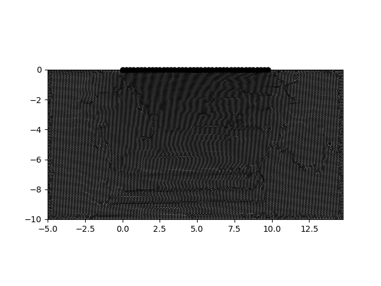
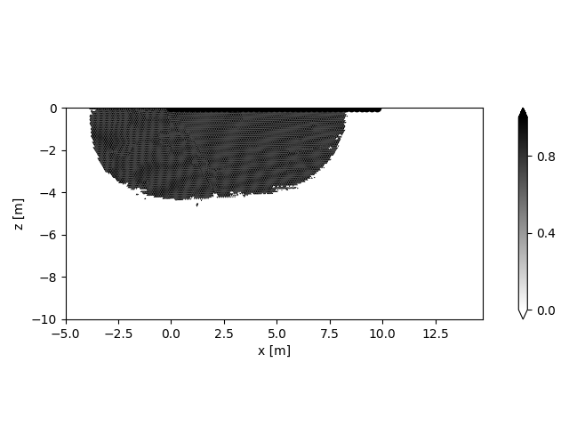

Note
Click here to download the full example code
Segmenting sensitivity distributions
Imports
import numpy as np
import crtomo
import pylab as plt
create and save a FEM-grid
grid = crtomo.crt_grid.create_surface_grid(
nr_electrodes=40,
spacing=0.25,
depth=10,
char_lengths=0.1,
left=5,
right=5,
)
grid.plot_grid()
grid.save_elem_file('elem.dat')
grid.save_elec_file('elec.dat')

Out:
This grid was sorted using CutMcK. The nodes were resorted!
Triangular grid found
create the measurement configuration
for different background, plot the sensitivities
bg = 100
td = crtomo.tdMan(grid=grid)
td.configs.add_to_configs(configs)
td.add_homogeneous_model(bg, 0)
td.model(sensitivities=True)
fig, ax = plt.subplots(1, 1)
s_abs = np.abs(td.parman.parsets[2])
threshold = np.quantile(s_abs, 0.75)
s_abs[s_abs <= threshold] = 0
s_abs[s_abs > threshold] = 1
td.plot.plot_elements_to_ax(
s_abs,
ax=ax,
plot_colorbar=True,
cmap_name='binary',
)
fig.tight_layout()
fig.show()
fig.savefig('test_sens.jpg', dpi=300)
# sphinx_gallery_thumbnail_number = -1

Out:
attempting modeling
b' ######### CMod ############\nLicence:\nCopyright \xc2\xa9 1990-2020 Andreas Kemna <kemna@geo.uni-bonn.de>\nCopyright \xc2\xa9 2008-2020 CRTomo development team (see AUTHORS file)\nPermission is hereby granted, free of charge, to any person obtaining a copy of\nthis software and associated documentation files (the \xe2\x80\x9cSoftware\xe2\x80\x9d), to deal in\nthe Software without restriction, including without limitation the rights to\nuse, copy, modify, merge, publish, distribute, sublicense, and/or sell copies\nof the Software, and to permit persons to whom the Software is furnished to do\nso, subject to the following conditions:\n\nThe above copyright notice and this permission notice shall be included in all\ncopies or substantial portions of the Software.\n\nTHE SOFTWARE IS PROVIDED \xe2\x80\x9cAS IS\xe2\x80\x9d, WITHOUT WARRANTY OF ANY KIND, EXPRESS OR\nIMPLIED, INCLUDING BUT NOT LIMITED TO THE WARRANTIES OF MERCHANTABILITY,\nFITNESS FOR A PARTICULAR PURPOSE AND NONINFRINGEMENT. IN NO EVENT SHALL THE\nAUTHORS OR COPYRIGHT HOLDERS BE LIABLE FOR ANY CLAIM, DAMAGES OR OTHER\nLIABILITY, WHETHER IN AN ACTION OF CONTRACT, TORT OR OTHERWISE, ARISING FROM,\nOUT OF OR IN CONNECTION WITH THE SOFTWARE OR THE USE OR OTHER DEALINGS IN THE\nSOFTWARE.\n \n \n CRMod Process_ID :: 98912\n OpenMP max threads: 4\n Git-Branch master\n Commit-ID 85c7db34c4d77d51aa595704ccccff586eff89c8\n Created Wed-May-13-08:58:54-2020\n Compiler \n OS GNU/Linux\n\n Reading Input-Files\n++ check 1\r++ check 2 done!\n\rGetting voltage 1 No electrode cap file\n \n Rescheduling..\n less nodes than wavenumbers\n OpenMP threads: 3( 4)\n\n\r Calculating Potentials : Wavenumber 3 \r Calculating Potentials : Wavenumber 3 \r Calculating Potentials : Wavenumber 3 \r Calculating Potentials : Wavenumber 4 \r Calculating Potentials : Wavenumber 5 \r Calculating Potentials : Wavenumber 6 \r Calculating Potentials : Wavenumber 7 \r Calculating Potentials : Wavenumber 8 \r Calculating Potentials : Wavenumber 9 \r Calculating Potentials : Wavenumber 10 \r Calculating Potentials : Wavenumber 11 done, now processing\n solution time 0d/ 0h/ 1m/ 3s/ 59ms\n\n Modelling completedSTOP 0\n'
reading voltages
reading sensitivities
Total running time of the script: ( 3 minutes 17.151 seconds)